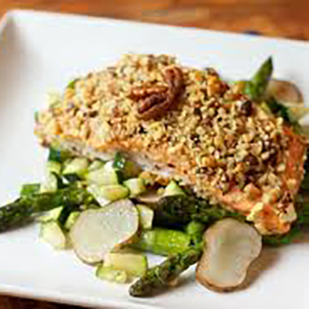

Pecan Chicken
A southern-inspired American dish. I would often ask for it on my birthday.
- 1 cup pecans
- 2 T cornstarch
- 1 t dried thyme
- 1 t paprika
- 1 & 1/4 t salt + a pinch, divided
- 1/4 t cayenne + a pinch, divided
- 1 egg
- 2 T water
- 4 boneless skinless chicken breasts
- 3 T vegetable oil
- 1 C mayonnaise
- 2 T Dijon mustard
- 1/2 t white wine vinegar
- 1/2 t sugar
- 2 T chopped parsley
Pulse pecans, cornstarch, thyme, paprika, salt, and cayenne in a food processor until the nuts are a chopped fine and transfer to a bowl. In another bowl, whisk together egg and water. Dip each piece of chicken in the egg mixture then in the nut mixture. Heat the oil in a large frying pan and cook the chicken about 5 minutes on each side, until golden brown. In a seperate bowl mix the dipping sauce by combining the mayonnaise, mustard, vinegar, sugar, parsley, and a pinch more each of cayenne and salt.